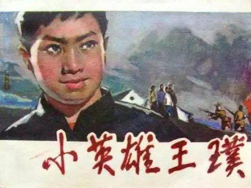

王璞

-->
王璞从小跟随父母参加抗日工作，11岁时被选为儿童团长。他经常带领小伙伴们拿着红缨枪，站岗放哨查路条，给八路军送信带路，开展拥军优属活动。为了对付鬼子扫荡，民兵大搞地雷战，王璞不仅仅学会了布雷，还学会了造雷。1943年春天，鬼子扫荡到王璞的家乡，王璞和乡亲们躲进山里。一天早上，鬼子包围了王璞和乡亲们。鬼子拿着汉奸带给的名单，让村干部、干部家属和军烈属站出来，王璞和他妈妈张竹子挺胸昂首站在最前面。鬼子把刀架在王璞的脖子上，威逼他说出八路军兵工厂的枪支和弹药藏在哪里。王璞勇敢地推开鬼子的刺刀，带领在场的二十多名儿童团员高呼:"我们不能忘记五不誓约，我们至死不当汉奸。"残暴的日本鬼子向在场的群众开了枪，制造了又一齐杀人惨案--野场惨案:118名无辜群众倒在了血泊之中，其中包括14岁的王璞、王璞的母亲、弟弟和奶奶。